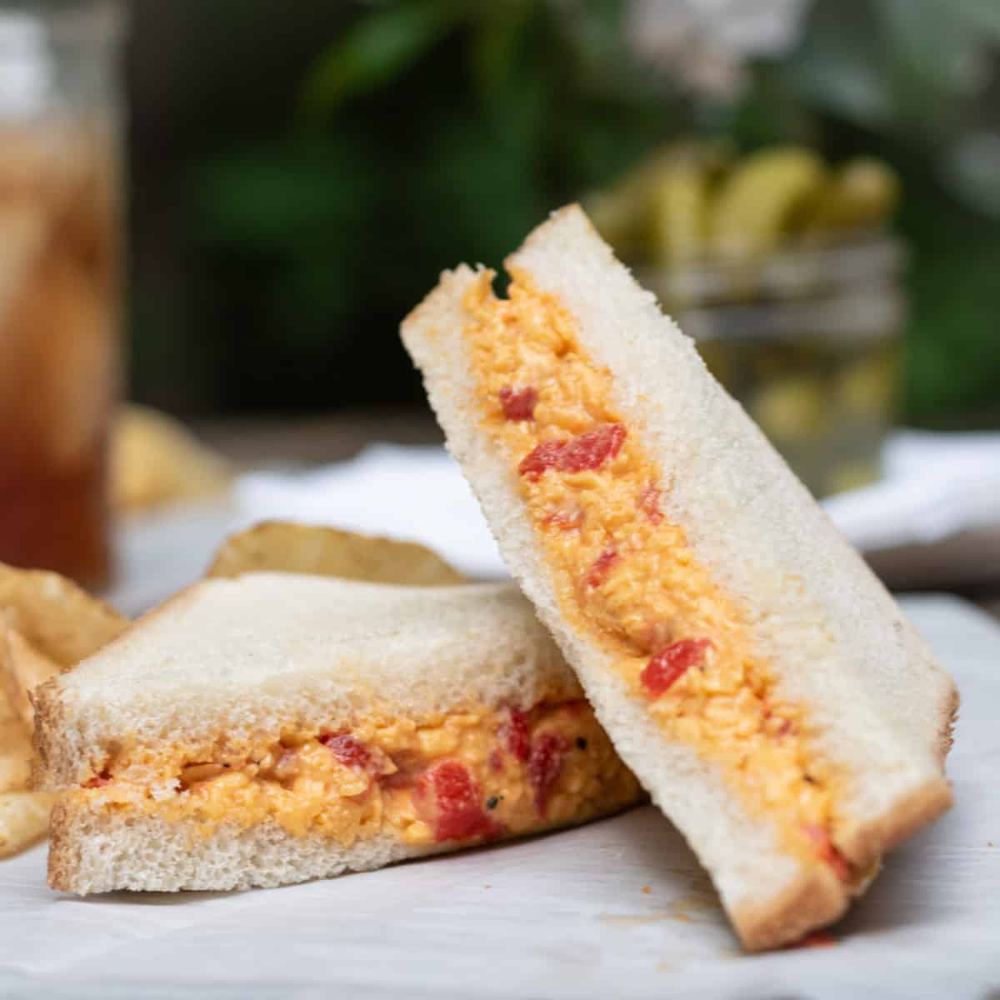

Pimento Cheese Sandwich Recipe
Go Back
Description

Tired of the basic grilled cheese sandwich? Want to spice it up a notch?
The pimento cheese sandwich is perfect for you!
This is a recipe anyone can make
and can be done in under 20 minutes.
Ingredients
Makes 2 Sandwiches
- 2 cups shredded sharp cheddar cheese
- 1/2 cup mayonnaise
- 4 oz jarred pimentos, drained and chopped
- 1/4 teaspoon garlic powder
- 1/4 teaspoon onion powder
- 4 slices of bread
Steps
- In a medium mixing bowl, combine the shredded cheddar cheese, mayonnaise, and chopped pimentos.
- Stir until well combined. Adjust the amount of mayonnaise to reach your desired consistency—more mayo for a creamier spread, less for a thicker spread.
- If using, add garlic powder, onion powder, salt, and pepper. Mix until everything is well incorporated.
- With two slices of bread, spread a generous amount of the pimento cheese mixture onto one slice of bread.
If desired, add lettuce, tomato slices, or pickles on top of the pimento cheese for extra crunch and flavor.
- Place the second slice of bread on top to complete the sandwich.
Tips
- Adding cream cheese to the pimento cheese spread mixture will result in an even creamier texture.
- The pimento cheese spread can be stored in an airtight container in the refrigerator for up to a week. This allows you to make sandwiches quickly whenever you're in the mood!